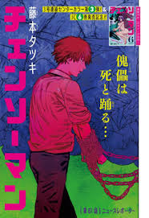
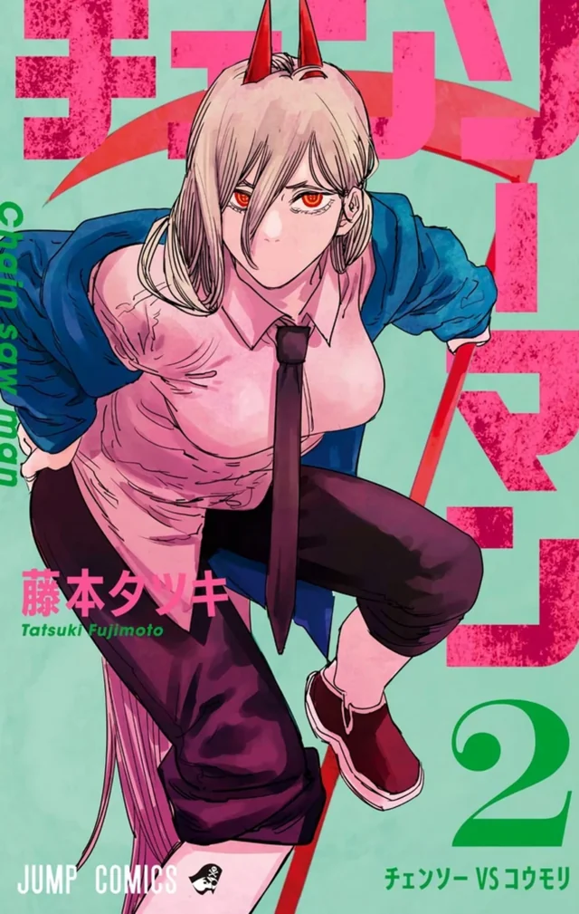
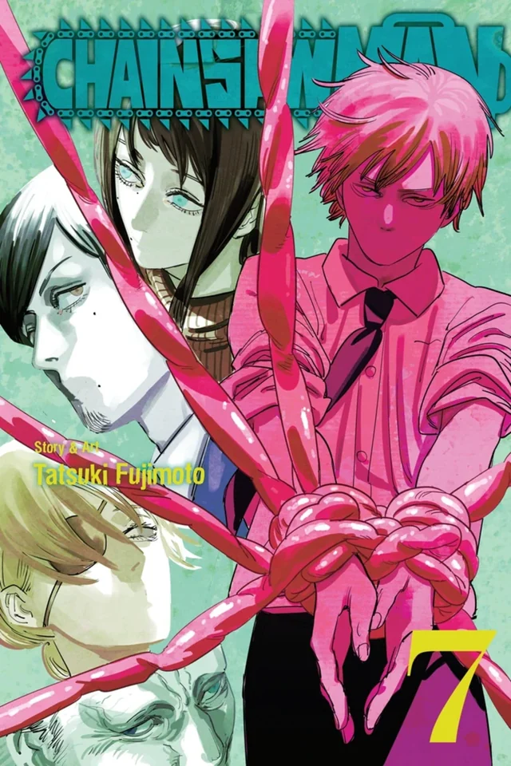

Chainsaw Man
Tatsuki Fujimoto
nació en 1992 en la prefectura japonesa de Yamagata y es un ilustrador y artista manga, conocido internacionalmente por ser el creador de Chainsaw Man. Se graduó de la Universidad de Tohoku de Arte y Diseño para poder comenzar su carrera como mangaka.
Sinopsis
Cuando su padre murió, Denji se vio obligado a saldar una gran deuda y no había forma de pagarla. Pero gracias a la ayuda de un Demonio Perro que salvó llamado Pochita, Denji es capaz de sobrevivir convirtiéndose en un Cazador Demonio a sueldo haciendo trabajos para los Yakuza. Los poderes motosierra de Pochita son útiles contra estos poderosos demonios. Y cuando Denji termina siendo asesinado por un demonio, Pochita se sacrifica para salvar su vida y revivirlo. Pero ahora Denji ha renacido como una especie de extraño híbrido Demonio-Humano. ¡Ahora es Chainsaw Man! Después de su transformación, es reclutado rápidamente por Makima y obligado a unirse a los Cazadores de Demonio de Seguridad Pública bajo amenaza de exterminio ahora que técnicamente es un demonio. Ahora que vive cómodamente por primera vez en su vida, Denji lucha por determinar sus sueños y establecer relaciones significativas mientras mata demonios y trabaja junto a otros excéntricos cazadores.
Seguidores
- Mario2872
- munaya
- gonzalo
- cielo
- Angel
- pablo32
Lista de Episodios
-  Capítulo 1: Introducción
-  Capítulo 2: Primer Encuentro
-
 Capítulo 3: Batalla Épica
Capítulo 3: Batalla Épica
-  Capítulo 4: Nuevo Desafío